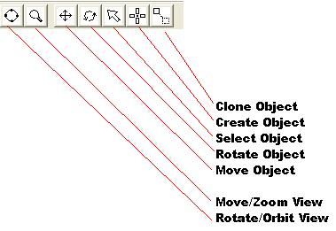
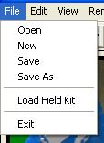

|
|
|---|
|
Paintball Field Builder Help |
|
User Interface |
|
The User Interface consists of 4 major parts. 1. Mouse 2. Toolbars 3. Field Kit Menu 4. Keyboard
-Mouse- Left Click – Creating Objects, Moving, Selecting Objects, Action Button For Tools. Right Click – De-Selects All Objects. Right Click
While Moving Mouse – Moves The View
-Toolbars- The toolbar allows you to change the function of the mouse. Depending on which tool is selected may decide if you move an object, or just rotate your view.  -Field Kit Menu- Click File->Load Field Kit to load a new Field Kit. To install a new field kit, just copy the file(*.PFK) to the field kit directory. By Clicking on one of the bunkers on the left side of the screen, you can select which bunker will be placed on the field. The selected bunker is indicated by a black outline. 
-Keyboard- Delete Key – Deletes the selected object. Left Arrow Key – Rotates the selected bunker counter clockwise. Right Arrow Key – Rotates the selected bunker clockwise. Escape – Exits Paintball Field Builder.
|
|
|